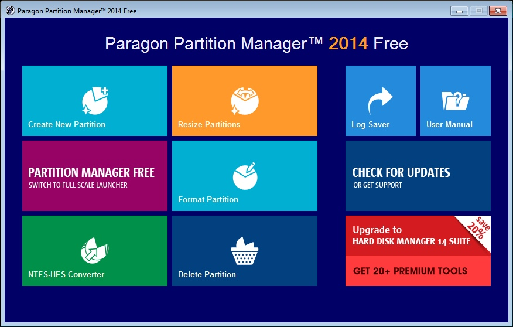
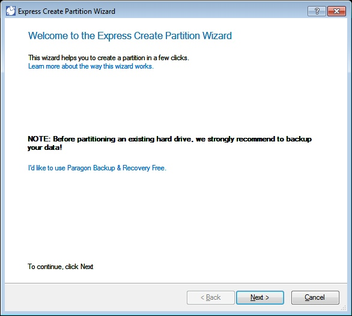
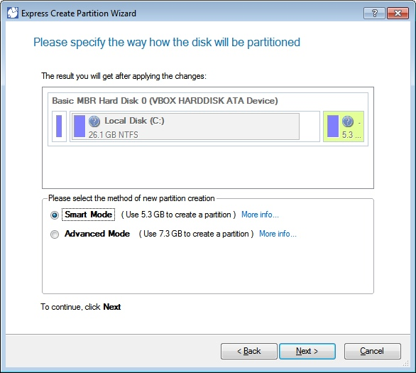
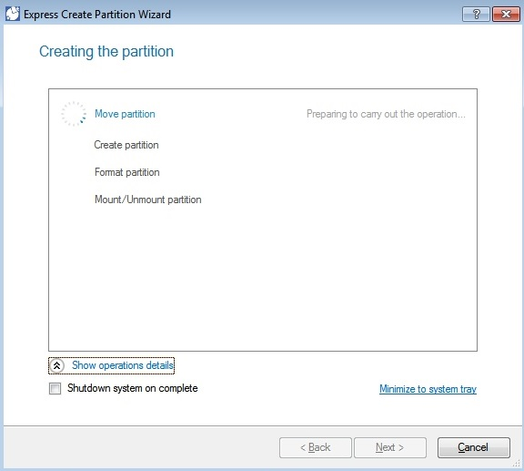
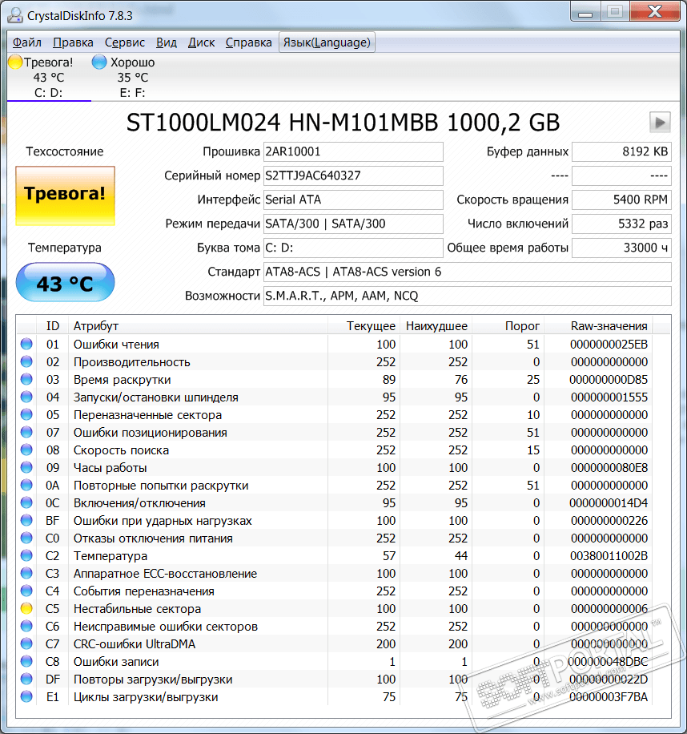
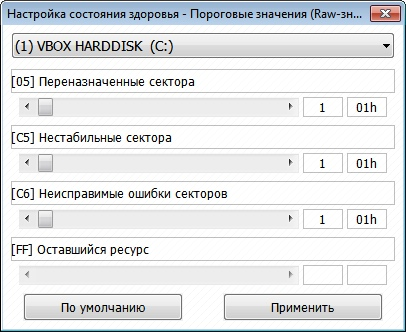
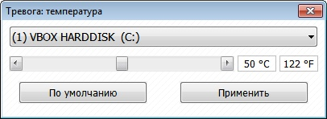

Утилиты обслуживания жестких дисков
Сегодня многие пользователи и владельцы компьютеров сталкиваются с необходимостью обслуживания жесткого диска. Чаще всего под этим термином подразумевается управление разделами винчестера: их создание, удаление, форматирование, изменение файловой системы и пр.
Acronis Disk Director Suite 10
Функционально Acronis Disk Director Suite 10 состоит из четырех модулей (каждый из которых когда-то был отдельным программным продуктом). Первый из них – "Менеджер разделов". Он предназначен для управления разделами жесткого диска.
Второй модуль, входящий в состав Acronis Disk Director Suite 10, называется "Администратор загрузки". Он позволяет устанавливать на компьютер различные операционные системы и управлять очередностью их загрузки.
Третий модуль Acronis Disk Director Suite 10 – "Редактор дисков". С его помощью можно просмотреть и изменить содержимое винчестера напрямую, без использования функций операционной системы.
Наконец, последний, четвертый модуль Acronis Disk Director Suite 10 – "Утилита восстановления разделов". Это очень простой в использовании инструмент, с помощью которого любой, даже начинающий пользователь сможет буквально несколькими кликами мышки вернуть на место случайно удаленный им самим или утерянный из-за сбоя, вируса или хакера раздел.
Работа программы:

На главном экране представлен список томов и информация о них.

Меню действий с томом
При выборе какого-либо тома слева отображается список возможных действий, которые можно сделать с томом.

Экран редактирования тома

Средство восстановления данных
Вывод: Acronis Disk Director Suite удобная программа с понятным интерфейсом имеющая множество функций для управления томами. Также позволяет восстанавливать утерянные данные.
Paragon Partition Manager 10 Professional
В плане управления разделами жесткого диска Paragon Partition Manager 10 Professional обладает всеми необходимыми возможностями. С помощью этой программы можно быстро создать, удалить или отформатировать раздел, изменить его размер или букву, конвертировать в другую файловую систему и т.п. Естественно, все операции выполняются без потери записанной на жестком диске информации.
Помимо этого в рассматриваемом продукте реализован целый ряд дополнительных возможностей. В первую очередь стоит отметить функцию управления загрузкой. Для этого используется специальный менеджер, с помощью которого можно создать мультизагрузочную среду. Данная возможность позволяет устанавливать на компьютер несколько операционных систем и управлять последовательностью их загрузки.
Следующая дополнительная функция – дефрагментация. Программа Paragon Partition Manager 10 Professional "умеет" оптимизировать размещение информации на жестком диске в соответствие с выбранным пользователем параметром (например, дата создания или размер файлов). При этом осуществляется дефрагментация не только самих данных, но и главной файловой таблицы, что ускоряет ее работу.
Еще одной дополнительной функцией рассматриваемого продукта является резервирование информации. Для этого используется процедура создания полных образов разделов жесткого диска.
Работа программы:

Главный экран программы
На главном экране представлены функции программы:
-
Создание нового раздела
-
Изменение величины раздела
-
Форматирование раздела
-
Конвертирование NTFS в HFS
-
Удаление раздела

Создание нового раздела

Выбор диска для выделения места под новый раздел

Процесс создания раздела
Вывод:Удобная программа, но имеющая не так много функций.
CrystalDiskInfo
CrystalDiskInfo - отслеживает состояние жестких дисков, поддерживающих технологию S.M.A.R.T. Производит мониторинг и дает общую оценку "здоровья" вашего диска.
Программа отображает детальную информацию о жестких дисках, установленных в компьютере (прошивка, серийный номер, стандарт, интерфейс, общее время работы и др.), а также выводит параметры атрибутов системы самодиагностики S.M.A.R.T. (ошибки чтения, производительность, запуски/остановки шпинделя, время поиска дорожки, количество циклов включения-выключения, ошибки секторов и многое другое).
Работа программы:

Главный экран
На главном экране представлено множество данных о жестком диске. Также тут можно увидеть найденные ошибки, температуру и оценку состояния

Настройка состояния здоровья

Настройка температуры
Программа позволяет менять параметры диска.
Вывод: отличная программа для слежения за состоянием жесткого диска.
Итог: Больше всего настроек представлено в Acronis Disk Director Suite 10, но если столько функций не нужно, то для редактирования разделов можно использовать Paragon Partition Manager 10 Professional. Для отслеживания же состояния жесткого диска подходит программа CrystalDiskInfo.